"Doing the hard work to make it simple" is about as close as I've got to a personal mission statement, and it plays out at both ends of the job. I can run a room through a genuinely difficult, ambiguous problem and get it into a plan — then stay close enough to the engineers and product people building it to keep the work honest all the way to launch. I'm just as comfortable standing in front of a leadership team making the case in three sentences, pushing back where a plan doesn't hold up, as I am heads-down in the detail myself.
Facilitation through to delivery: I get a room of conflicting views into a plan, then stay hands-on with product and engineering until it ships.
Executive storytelling: turning strategy into a story a room will act on, from a TEDx stage to a board update.
Hands-on craft: trained as an illustrator. Still happiest sketching a flow or writing the copy myself.
Positive challenge: I'll push back on a leadership team, a roadmap, or my own team — without losing the room.
Team building: built design teams from scratch three times over. The people I hire go on to lead elsewhere.
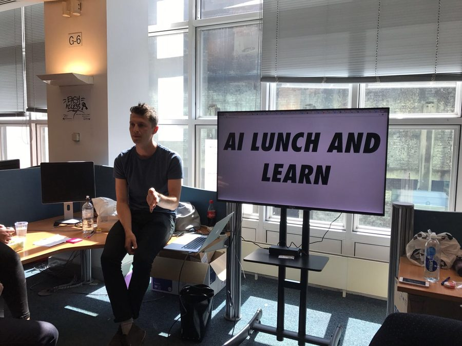
Running an AI lunch and learn back in my Lloyds time
I've selected three recent examples that best bring this to life.
012024 — Present
JPMorgan Chase
Design Director · London
JPMorgan hired me to lead design for compliance technology — the tools risk and control teams rely on every day inside one of the world's largest banks. I built the team from 7 to 21 and it's now the most respected and imitated within the corporate side of the firm.
Given the nature of work I cannot share screens, but key projects include:
A chat-based overhaul of cross-firm self-certification journeys used by over 300,000 colleagues, moving from complex screens to human, plain-language-driven conversation. I facilitated the design process and set the content design principles.
A machine-learning platform to replace two external surveillance vendors, enabling firm-wide monitoring of a range of financial and comms activity. This is a multi-year programme, and my role was to understand user needs, scope and design the MVP, and build a design team to take it from concept to delivery.
A design "school" for a community of 500 engineers, partnering designers with developers to explore AI-based ways of working and creating hybrid colleagues that tackle real-life briefs — this has been a lot of fun.
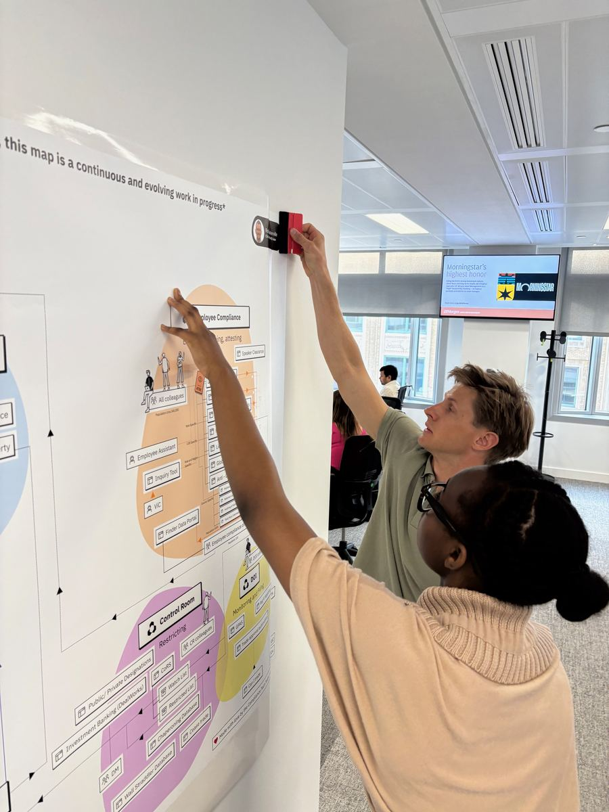
Bringing big pictures to compliance.
I've been using the Lab section of this site to explore ideas indicative of concepts I've designed within JPMC.
Case study: one surveillance service from two vendor platforms
Analysts served
100
Vendor platforms
2 into 1
Annual saving
Eight figures
Design team
7 to 21
The problem
Communications surveillance ran on two vendor platforms, one for voice and one for e-communications, propped up by manual exports. Most of their wider features went unused, hand-offs between colleague teams were slow and lossy, and translation options were limited.
What I designed
I personally designed the overall information architecture of the MVP, and the layout and flow of every key screen. The two artefacts that carried the work were a service design blueprint and an interactive prototype.
Around that, I set up a dedicated UX team and brought technology leadership together on a clear architectural agenda, so platform decisions served the service vision and not the other way round.
The hard part: common ground
Each vendor platform had its own way of handling and labelling the same key functions. I took the two apart function by function, compared how each handled and named things, and designed the common ground: one model and one vocabulary that works for voice and e-comms alike.
How we worked
Research first: we sat with analysts and learned the work as they do it.
Prototypes in code: AI-assisted working prototypes let us test ideas and directions in days, not quarters.
Reuse over reinvention: we used AI to trial components from sister teams quickly, which shortened delivery.
Blueprints as the shared map: service design views kept technology, product and the business aligned on one picture.
AI for synthesis: I feed systems maps, architecture diagrams, code repositories and strategy papers into AI to extract insight, then use it to score possible interventions.
AI in the service
AI does two jobs for the analyst. It translates, in the underlying technology, and it summarises each alert inside the interface so a colleague can see quickly what they are looking at. Getting AI into a live surveillance workflow was a shared process, and we brought every type of colleague into it.
Winning the decision
The prototype did the persuading. Confidence in the MVP is what enabled senior sign-off on a single solution for voice and e-comms.
What it looks like
I can't show the real service. These screens are an illustrative concept I built for this portfolio, for a fictional firm with invented data, to show the kind of thinking involved: one queue across voice, email and chat, translation built into review, and hand-offs that carry their evidence with them.
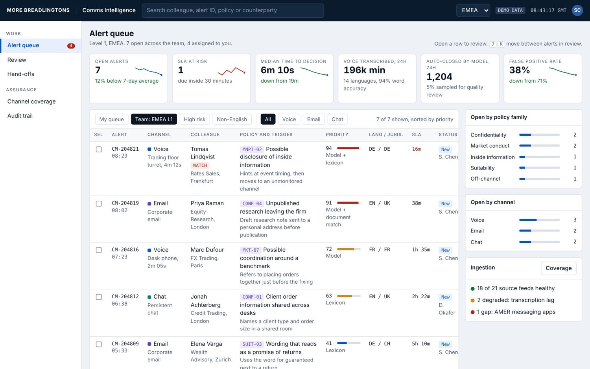
Concept: one queue across every channel.
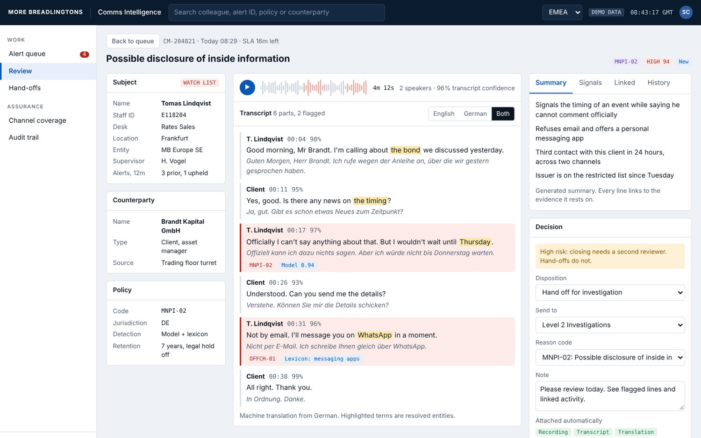
Concept: review with translation and context in one place.
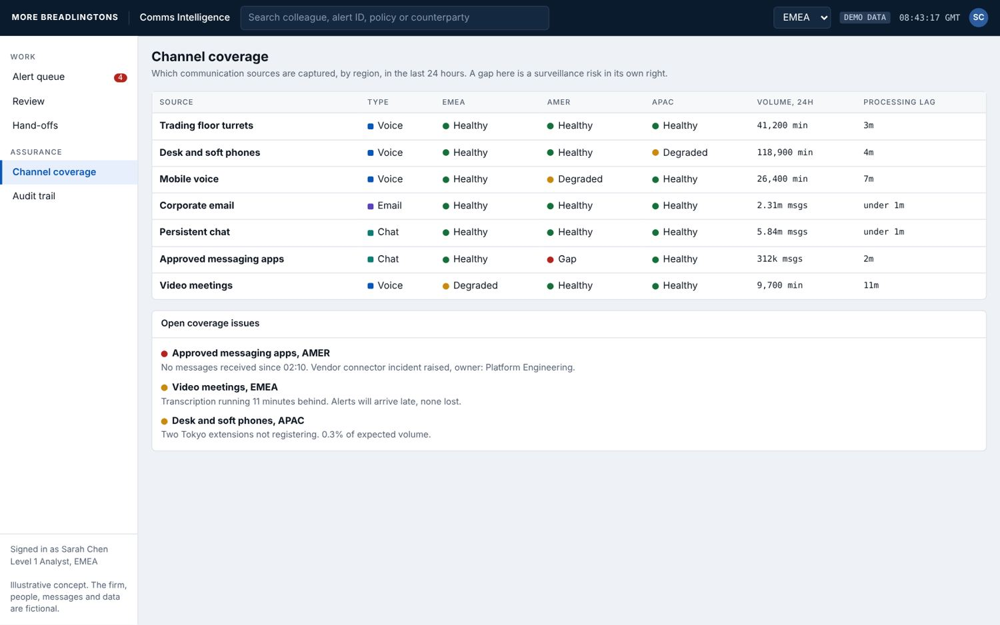
Concept: knowing what is, and isn't, being captured.
Results
Shipped: the working service went live in 2026.
For the business: the vendor tool was retired, with an eight-figure annual saving, and the architectural vision was realised.
For analysts: measured on time per review, false positives and languages covered. I can't publish the figures.
For the platform: trade surveillance is now adopting the patterns I set.
What I'd do differently
Hold the vision harder, earlier. In the first phase I let a neighbouring team's preferences shape the information architecture, and we spent time negotiating structure that should have gone on testing it with analysts. Next time I'd establish a distinct, evidence-backed vision before opening it up, and use prototypes to settle the argument.
022021 — 2024
4G Capital
Chief Product Officer · London & Nairobi
4G Capital is Africa's leading neobank and a certified B Corp, serving customers and small businesses across Kenya and Uganda that mainstream banks overlook. When I joined, there was no dedicated product design function, and the technology stack was holding the business back.
I built a product design team from scratch and tackled the design of the colleague and customer service as one, leveraging an idea I developed at Lloyds Banking Group. The existing customer service ran on a simple shortcode (a popular East-African SMS-based technology) journey, which formed the backbone of how I scoped and designed the Android app. My role was to use service design to map the existing process, tech stack and customer/colleague journey, then design the IA, content strategy, and key screens and journeys for both customer and colleague services.
Case study: one service for 2,000 field staff and their customers
Field colleagues
2,000
Product team
2 to 10
Product take-up
+37%
Regulated status
Achieved
The problem
Eight years of legacy technology was capping what the product could do. Colleagues filled the gaps with manual work, and the product team had no clear direction.
What I designed
I designed the information architecture, the content strategy, and the key screens and journeys for both the colleague and the customer service. The hardest was customer onboarding: the number of data points we had to capture was extensive.
Around that, I grew the product function from 2 people to 10, spanning product management, design and innovation, and selected a new banking backend provider with the CEO and CTO.
What we learned
Paper was the real operating system, on both sides of the counter. Colleagues managed their day from paper lists and Google Docs, and customers ran their businesses from ledgers. The design task was to replace those tools with something better, not to add another system on top.
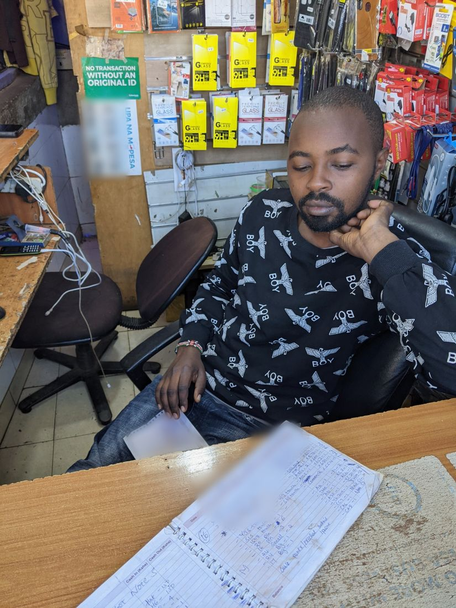
A customer's business, run from a ledger. Personal details blurred.
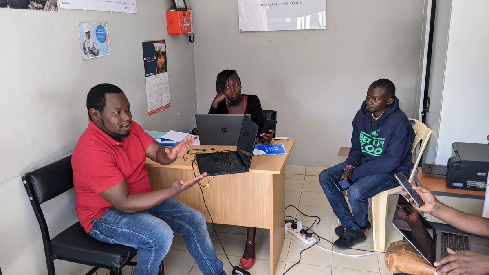
Testing with branch colleagues.
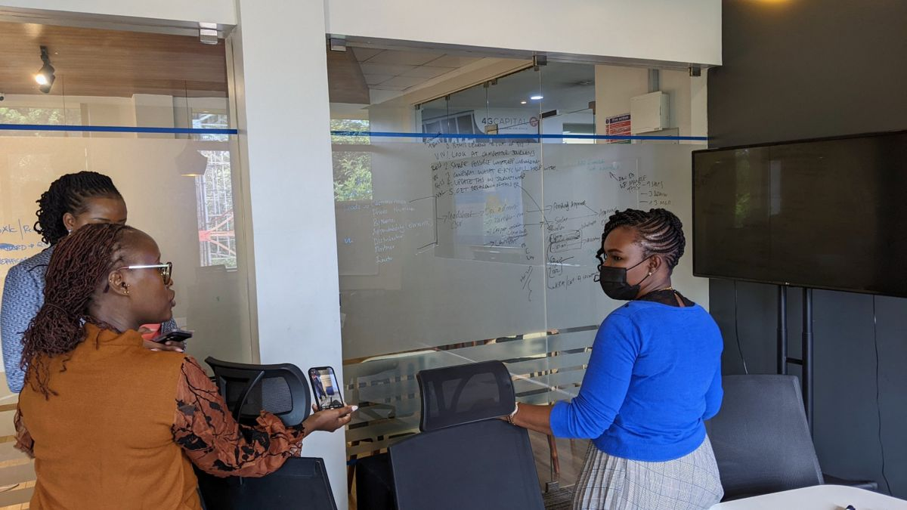
Mapping the onboarding journey at HQ.
The key decision: mirror images
I set the direction to design the colleague and customer experiences as mirror images of one another: a common information architecture, a familiar interface, shared components and labels, and one journey seen from two sides.
It made for a faster build. It also changed the conversation: when a customer got stuck in onboarding, the colleague was looking at the same journey and could help.
Trust in the score
The machine-learning scoring tool was the tricky area. We had evidence that colleagues were gaming the system. We built trust by introducing explainability into the algorithm, and I redesigned field training so colleagues understood how it worked, but not in so much detail that they could game it.
What we shipped
A new technology stack on a modern banking backend.
A machine-learning customer scoring tool.
Android apps for colleagues and for customers.
A simplified SMS service.
Customer education inside the app, on a syllabus I simplified.
Results
A 37% uplift in overall product take-up.
Helped the company achieve regulated status in Kenya.
Onboarding time and customer education delivered became the key service measures.
What I'd do differently
Prototype from day one. We slipped into waterfall habits, and some business processes that should have been redesigned were coded into the new platform as they were.
032016 — 2021
Lloyds Banking Group
Design Director · London
In five years I grew a service design capability from 0 to 34 designers, then became design director for retail, shaping a wider team of 100 and setting the vision for what great looked like across every surface. I finished by product designing a new digital service end to end, then ran a 'run-ahead' team using emerging tech to solve problems customers hadn't been able to name yet.
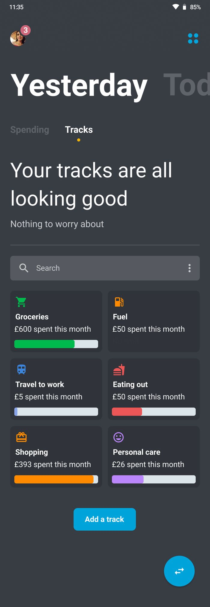
Tracks — spending by category
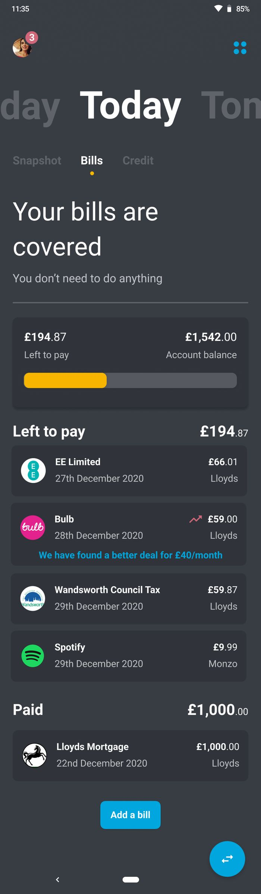
Bills — all in one place
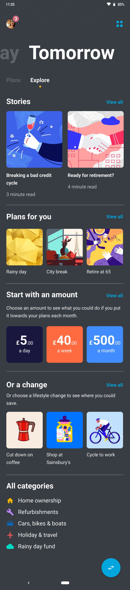
Explore — plans for the future
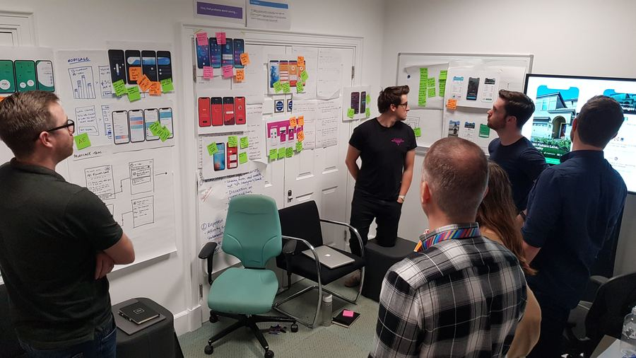
Concept comparison.
I was across a number of projects, including:
The mobile cheque deposit journey, still in use in the Lloyds Bank app today. My role: service design.
The consumer app design team that delivered a 14-point NPS increase. My role: design leadership and mentoring.
Designing a future-facing version of the B2C service. My role: design leadership, IA, content design and screen design.
I'm also proud of the work I pioneered to assess and grow skills within the design team.
This video does a nice job of linking my illustration degree to my work at Lloyds: